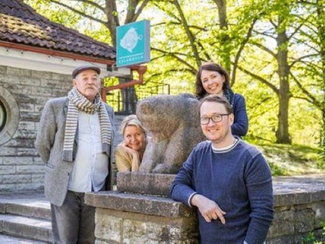
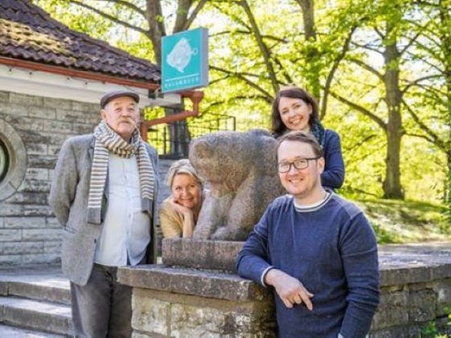

Õpitoad ja Catering
Õpitoad
Koržetsite õpiköök on viinud enam kui 15 aasta jooksul läbi sadu kalaroogade valmistamise õpitubasid. Vaata lähemalt...
Catering
Oleme toitlustanud Cateringi võtmes enam kui 5 aasta jooksul erinevaid pidusid, sünnipäevasid kui ka messe. Vaata lähemalt...
Kuidas kõik alguse sai.
Ammu aega tagasi, siis kui nii Vladislav kui ka Kaarel kaalusid veel mõnedki kilod vähem, kutsus Anu Välba, kes oli kuskilt kuulnud, et Vladislavile meeldib sõprasid vahetevahel hää kalaga kostitada, teda“Terevisiooni” neljapäevasesse kokanurka kalaroogasid valmistama. Kui Vladislav proovis Anule selgeks teha, et ta ju ei ole kokk vaid rohkem nagu jutu- ja kirjamees vastas too, et ega inimesed sealpool ekraani ju sööke maitsta saa. Peaasi, et uskuma jäävad roogade imelistesse maitsetesse. Vladislav mõtles hetke ja arvas siis, et äkki tõesti suudab ta inimestele oma jutuga sülje suhu rääkida. Ja seda ta suutiski.
Ühest asjast kasvas teine ja enne kui Vladislav õieti arugi sai, andis ta välja kokaraamatu “Koržetsi kalaraamat”, käis erinatel sündmustel showkokkamisi tegemas ja oli üleüldse järsku omandanud suure kalakoka kuulsuse.
Ja eks siis kasvas teisest asjast kolmas. Nimelt avastas Kaarel, et ka talle meeldib süüa teha ja mis veel olulisem, teistele meeldisid tema tehtud söögid. Niisiis hakkasid isa-poeg koos mööda Eestimaad ringi sõitma ja inimestele kalatarkust jagama. Ja tarkuse nõudlejaid oli ja on siiamaani palju!
Kui avastasid nüüd, et Sina polegi millegipärast nende hulgas siis võta meiega julgelt ühendust ja lahendame selle probleemi.
 

Kuidas kõik alguse sai.
Ammu aega tagasi, siis kui nii Vladislav kui ka Kaarel kaalusid veel mõnedki kilod vähem, kutsus Anu Välba, kes oli kuskilt kuulnud, et Vladislavile meeldib sõprasid vahetevahel hää kalaga kostitada, teda“Terevisiooni” neljapäevasesse kokanurka kalaroogasid valmistama. Kui Vladislav proovis Anule selgeks teha, et ta ju ei ole kokk vaid rohkem nagu jutu- ja kirjamees vastas too, et ega inimesed sealpool ekraani ju sööke maitsta saa. Peaasi, et uskuma jäävad roogade imelistesse maitsetesse. Vladislav mõtles hetke ja arvas siis, et äkki tõesti suudab ta inimestele oma jutuga sülje suhu rääkida. Ja seda ta suutiski.
Ühest asjast kasvas teine ja enne kui Vladislav õieti arugi sai, andis ta välja kokaraamatu “Koržetsi kalaraamat”, käis erinatel sündmustel showkokkamisi tegemas ja oli üleüldse järsku omandanud suure kalakoka kuulsuse.
Ja eks siis kasvas teisest asjast kolmas. Nimelt avastas Kaarel, et ka talle meeldib süüa teha ja mis veel olulisem, teistele meeldisid tema tehtud söögid. Niisiis hakkasid isa-poeg koos mööda Eestimaad ringi sõitma ja inimestele kalatarkust jagama. Ja tarkuse nõudlejaid oli ja on siiamaani palju!
Kui avastasid nüüd, et Sina polegi millegipärast nende hulgas siis võta meiega julgelt ühendust ja lahendame selle probleemi.